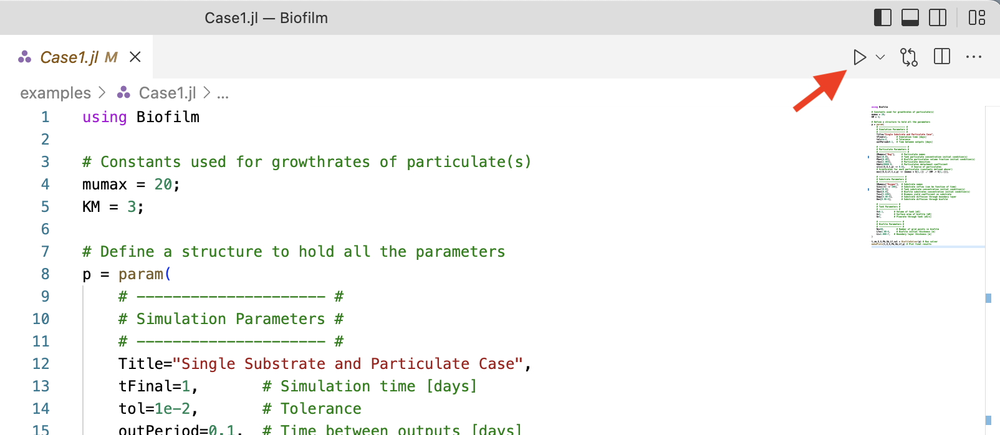
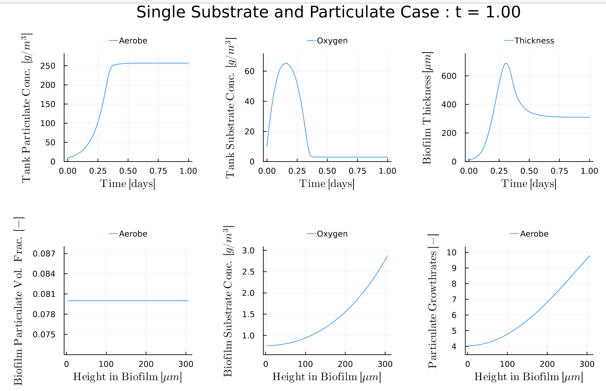

Installation
Download & Install Julia
Download the latest version of Julia from julialang.org
Install Julia following the provided directions on the help page. The default installation directory should be fine. On Windows be sure to select the option to add Julia to the path to allow VS Code (next section) to find Julia. On Mac or Linux be sure to follow the instructions on adding Julia to PATH.
Launch Julia by finding the icon where you installed the program. If you have been successful, you should see the REPL like this image (version number may be different)

Try running a simple code like julia> 5+5 to see that you can use Julia. You could even try learning more about the language by doing a tutorial like this one: "From zero to Julia!".
VS Code - GUI for Julia
Julia is a programming languages and you can use it in many ways. One popular way to run Julia code is through Visual Studio Code, which allows you to edit, run, and see results from a code. Alternatively, you could run Julia directly in the terminal (e.g. >> julia)
Download, install, and open VS Code. You can find the installers on code.visualstudio.com
Install the Julia extension by julialang in VS Code. Details on how to install an extension in VS code are available here.
Start the Julia REPL in VS Code by opening the command-pallet using
Ctrl-Shift-pon Windows orCmd-Shfit-pon Mac then searching for and runningJulia: Start REPL. This will start Julia inside of VS Code.
Add the Biofilm.jl package
Run the following command in the Julia REPL within VS Code.
julia> import Pkg; Pkg.add("Biofilm")
This will download Biofilm.jl and all the dependencies and can take several minutes to finish.
Run Biofilm.jl
Try running Case 1
Download Case1.jl by right clicking and choosing Save Link As. Save the file to your Downloads folder (or other location of your choice)
Run the case by opening the file in VS Code (File -> Open) and clicking the play button in the top right corner. 
You should see output to the REPL and a plot like this: 
The top row shows the biomass (particulate) and solute concentrations and the biofilm thickness as a function of time. The bottom row shows the particulate volume fraction, solute concentration, and particulate growth rate as a function of position within the biofilm at the output time (t=1.0 as indicated by the title).
- Try editing the case file or explore other Examples
The first time you run Biofilm.jl it will require time to compile. Subsequent runs should occur much faster.